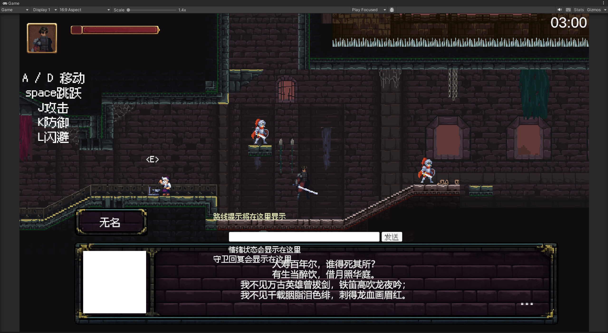

3 × 3任务 · 解锁 · 奖励
《三角洲行动》赛季任务系统策划
系统策划 · 任务与奖励 · 界面原型
以 3×3 安全箱为核心奖励目标，拆解行动计划、收集者、命运契约与赛季目标四大模块。独立完成任务规则、分阶段解锁、奖励机制、界面原型，以及任务、条件、奖励和赛季配置表。
查看系统策划案 ↗GAME DESIGN PORTFOLIO
你好，我是
游戏策划 · 系统设计 · 关卡设计
从玩家体验出发，把系统规则、关卡节奏与叙事想法做成可玩的体验。
系统策划 · 任务与奖励 · 界面原型
以 3×3 安全箱为核心奖励目标，拆解行动计划、收集者、命运契约与赛季目标四大模块。独立完成任务规则、分阶段解锁、奖励机制、界面原型，以及任务、条件、奖励和赛季配置表。
查看系统策划案 ↗TapTap 聚光灯 Game Jam · UE5 · 玩法与叙事
围绕“涌现”主题，主导核心玩法与关卡叙事设计。以涂鸦与画册为核心交互，设计四段递进式情感关卡，通过蓝、绿、红三阶段色彩复苏与场景解谜，呈现受创儿童重新理解家人与生活的过程。
查看 Game Jam 策划案 ↗校企合作 · Unity 2D · 关卡策划
负责横版跑酷关卡设计与搭建，围绕移动、跳跃规划玩家路线、平台与障碍配置。设计难度递进与挑战节奏，结合实际游玩体验调整关卡结构，协同程序、美术推进实现与优化。

腾讯游戏创作大赛作品 · Unity 2D · 独立开发
基于《九州缥缈录》世界观，独立完成横版潜入营救游戏的玩法设计、关卡搭建与功能实现。以三条差异化路线、敌人巡逻、限时挑战和隐藏通道构建“潜入—营救—撤离”循环；后续计划接入 AI NPC。
观看游戏演示 ↗TapTap 2026 聚光灯 Game Jam / 策划
主导核心玩法与关卡叙事，设计四段情感关卡及三阶段色彩复苏机制。统筹策划方案落地与版本日志更新，协同程序、美术完成梦境场景，将解谜、视觉反馈与情感叙事结合。
个人作品集 / 系统策划
独立设计主支线任务、阶段解锁、备用支线及多层奖励。定义调查、击败、收集、撤离的完成与失败规则，设计收集者委托分级、随机刷新与锁定机制，以及命运契约周期解锁；输出界面原型、交互状态、配置表与美术需求文档。
校企合作项目 / 关卡策划
负责 Unity 2D 横版跑酷关卡设计与搭建，规划整体布局、行进路线、平台和障碍，调整难度曲线与挑战节奏，并依据实际游玩体验持续优化关卡。
腾讯游戏创作大赛作品 / 独立开发制作人
独立完成核心玩法设计、关卡搭建及功能实现，设计三条差异化潜入路线，整合巡逻、倒计时与隐藏通道，形成潜入、营救、撤离的完整循环。AI NPC 动态对话与行为反馈为后续计划。
我是邬志鹏，成都东软学院数字媒体技术专业本科在读，关注游戏系统策划、玩法设计与关卡设计。希望把玩家体验中的问题转化为清晰的规则、可执行的文档和可验证的原型。
长期游玩《王者荣耀》《三角洲行动》《永劫无间》等作品，尤其关注 MOBA、FPS 等竞技品类。我习惯从核心机制、竞技平衡、玩家反馈与成长系统分析设计，思考玩法目标、行为引导和长期留存之间的联系。
能独立撰写系统策划案、关卡设计文档、功能说明及配置表；掌握 C#，熟悉 Unity、UE5 开发流程，并使用 AIGC 工具辅助创作。具备 Maya、Blender、Photoshop 及 Office 工具使用能力，能结合技术与美术资源约束推进设计落地。